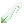
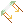
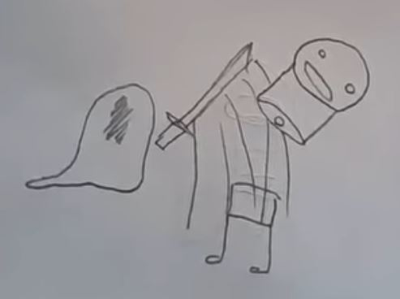
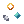
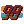
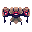
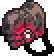

Tachi
"Nekkyo no shunkan to ora"
Primary-Fire: Blade Master's Stab. Hold to prime your floating sword, which causes it to lock into place. Releasing causes it to be fired out in a direction opposite your cursor, dealing moderate damage and impaling struck enemies, causing them to be embedded with a sword.
Secondary-Fire: CLIPPED-WING-BUTTERFLY-INSTANT-DEATH-BLUESCREEN CRESENT. Enter KILL MODE, sheathing your sword to dash around at high speeds. Attacking unleashes a C.W.B.I.D.B.S.C., dealing a monumental 150 damage and shattering your sword. Killing enemies with swords embedded in them with C.W.B.I.D.B.S.C. re-primes your sheath, allowing you to continue KILL MODE. Duration can be extended as long as there are embedded enemies to
SPECIAL: Art of the Blade. Use your gravity pylons to telekinetically control a floating sword that follows your cursor within a limited range around you. While not being puppeted with Blade Master's Stab, your sword spins, deflects projectiles, and deals light damage and knockback on contact.
Press this button to THWANG!!!
Overview:
Best Upgrades:
-
Fractured Mind - The heretical art. How many swords we could wield, were it not for the narrow-mindedness of those who dictate how we practice our art. But perhaps, someday, we may find ourselves in a world where anomalies such as we can find a home. Fuhuhuhu~
-
True Focus - Omae wa mou shindeiru. Unleash the true power of the C.W.B.I.D.B.S.C., instantly teleporting into all enemies with embedded swords and slashing them in an epic anime combo.
-

Harpoon Tip - Impale multiple enemies together with one stab, locking them in place and allowing you to kill both at once with one C.W.B.I.D.B.S.C.
-

Ricochet Simulation - Channel your inner Jedi, and reflect bullets directly back at their sources rather than randomly.
Trivia:
- According to Word of God from the RAM 1.0 devlog, the gimmick of embedding swords in enemies was inspired by a scene from Chainsaw Man.
- The Forbidden Oathblade weapon line from the Terraria Calamity Mod was based off of Tachi. These reworks were added in the Brainstorm Update, which was actually delayed in part because of how many devs were too busy playing RAM to work on the mod.
- Never bring a plasma gun to a plasma sword fight.
- The unused song Tachi Fortress was intended for Stage 2's second half. It was removed for being too hype and badass. It has been included on this website for your listening pleasure
- Also included below is concept art for the Tachi. It's quite derpy, but it has its own charm regardless.
- Some say that there is another path for the Tachi. Another technique to perfect their art. But such a practice is known to be heresy, and any who practice it are swiftly excecuted. One has to wonder, though, what gifts a Fractured Mind could offer, fuhuhu~.
Media

Collider
A wise football coach once said:
The best offense is a good defense... that also coincidentally acts as an offense (by virtue of absorbing bullets and firing them.)
Primary-Fire: Ionic Acceleration Cannon. Convert captured projectiles into lasers, winding up firerate over time, and reducing Secondary-Fire cooldown.
Secondary-Fire: Tackle. Slam into enemies, dealing damage based on movement speed and dislodging free scrap into your orbit. Kills drop double scrap.
SPECIAL: Particle Shield - Project an energy field that decelerates projectiles and causes them to orbit the Collider. Use caught projectiles as ammunition for Primary-Fire.
Overview:
RAM's bots need to strike a complex balance between high-octane aggressive gameplay and having unique battlefield roles. The original incarnation of Collider was signifigantly less mobile, which was, quite frankly, lame. And then Toby and Andrew had the brilliant idea: What if we RUSHED YARDS. Colliders, armed with their new tackle, were sent forth into the streets of Oeyama to protect, serve, and blast into scrap metal anything that dared cross their path.
Best Upgrades:
-

Improvised Projectiles - Generate projectiles over time while not shooting. Free ammunition is free ammunition.
-
Orbit Stabilization - Store more chips on your shoulders. Captured projectiles slow your movement speed less, as well as letting you generate more using Improvised Projectiles.
-

Beeftank Doctrine - DRIVING IN MY CAR...
Trivia:
- Colliders are chronically obsessed with ball sports, in particular American football. However, they are also known to enjoy soccer, baseball, and even croquet.
- Aphid flames are deflected but not fully negated by Collider shields, meaning that at extremely close ranges or with sufficient flame velocity you can melt them. This is a subtle reference to the fact that if you shot the Large Hadron Collider with a flamethrower, it would explode!
- There's another side to RAM and Calamity Mod crossover content! There's a skin for Collider based off of the Slagsplitter Pauldron accessory. Images of the skin and the item can be found below.
Images

